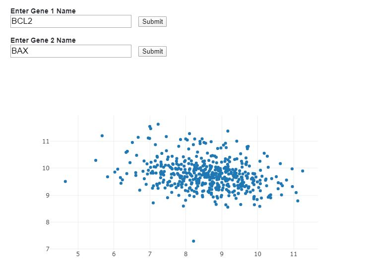
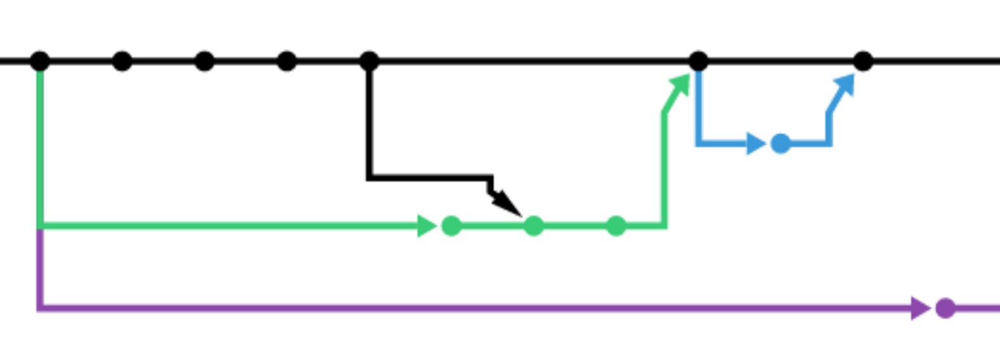
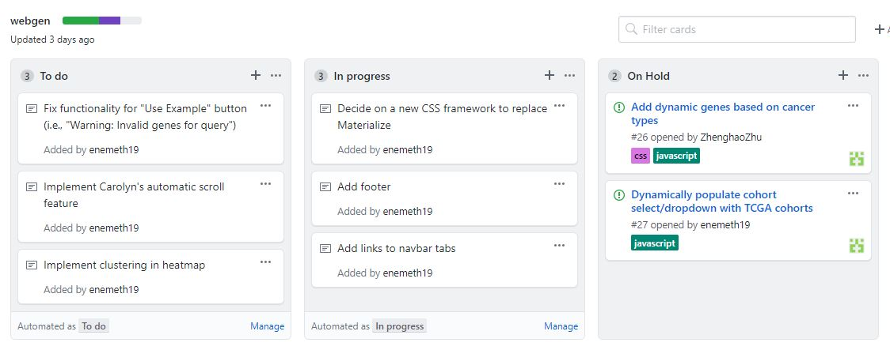

Our team consisted of individuals with different expertise, so it was important to set up mechanisms by which we could share knowledge and communicate effectively.
Observable notebooks were used to practice calling APIs and plotting data using JavaScript
Eventually, we transferred code from our Observable notebooks to our GitHub repository
Our GitFlow: Each team member created a name branch, from which they created a feature branch. When work on a feature was done, the feature branch was merged into the name branch. The name branch was then pushed to GitHub and a pull request was created.
The Project and Issues features on GitHub were used to assign and manage tasks
In addition to weekly meetings, Slack channels were used to organize discussion topics and sub-team meetings were held.